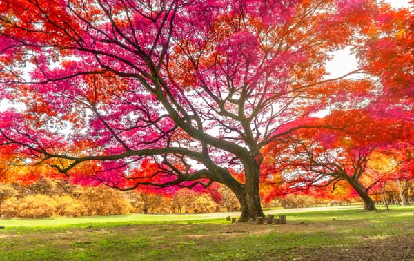
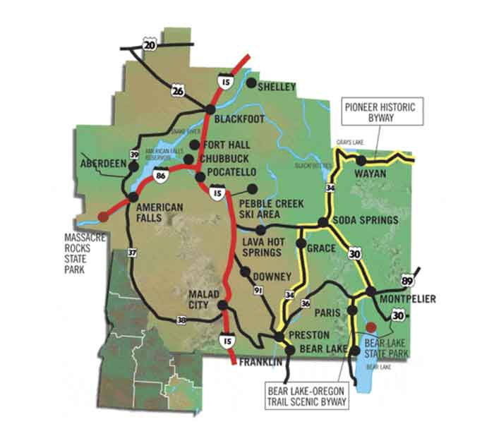

Preston, Idaho
Weather Summary
Currently: Sunny
High: 76* Wind Chill: *F Humidity: 69% Wind Speed: 5 mph
| Fri | Sat | Sun | Mon | Tues |
|---|---|---|---|---|
68 |
76 |
68 |
59 |
64 |
The Best Times And Places To View Fall Foliage In Idaho
Labor Day has come and gone, the weather is finally cooling down, and the leaves are gradually starting to change. It seems like we can finally say goodbye to summer, and that means saying hello to one of the most beautiful times to be in Idaho. Fall is especially magical for many reasons, but the changing of the leaves from their luscious green to golden yellows and crimson reds is by far the most amazing. Thanks to this interactive map from Smoky Mountains, you can now know exactly when to see fall colors in Idaho.
It’s always fun to visit an Idaho pumpkin patch. Linder Farms not only has tons of splendid pumpkins to choose from — they also have one of the most intricate corn mazes in the state. After you’ve found your way out, you can say hello to the farm animals and munch on a sweet treat. Lowe Family Farmstead is another wonderful pumpkin patch. This exciting attraction is located in Kuna, Idaho, and it’s packed with adventure. In addition to the hay rides, potato sack slide, and yard games, this farm has a spooky Halloween-themed attraction called The Field Of Screams. Are you brave enough to explore this?
Despite being inland, Idaho weather is largely influenced by climate from the Pacific Ocean. In general, the southern portion of the state is warmer, while the northern region gets more precipitation. In winter, this means lots of snow in the north, where up to 500 inches have accumulated in one season in years past. While Boise gets an average of 21 inches of snow each winter, Coeur d’Alene averages at 52 inches every year, and the mountains get significantly more still. Winter temperatures average around 34°F December through February throughout most of the state, with nightly lows dropping well below freezing.
Contact information
Search The Skies
PO Box 999
Preston, ID 88888